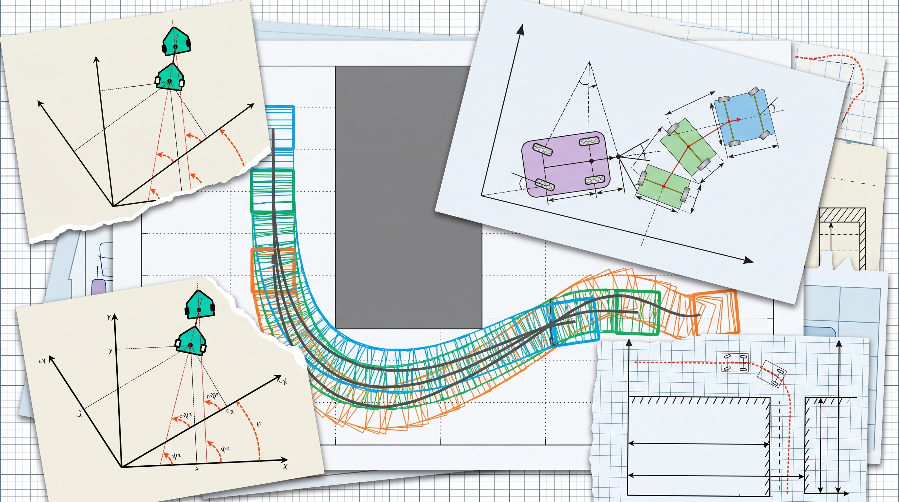

Reversing a tractor towing an unsteered passive trolley is an unstable articulated system — analogous to balancing a fast inverted pendulum on wheels. By augmenting a Frenet-frame NMPC formulation with trailer kinematics and soft barrier functions, precise reverse docking is achieved without jackknifing.
the problem: articulated instability
Simply put, reversing a tractor with a passive trolley is a notoriously difficult control problem because the articulated mechanical linkage creates an inherently unstable system. Any small angular deviation between the tractor and the trailer rapidly amplifies when driving backwards, leading directly to a jackknife event where the hitch locks up and control authority is completely lost.
When starting this project, our baseline was an existing Model Predictive Controller (MPC) formulated in a Frenet Frame, implemented using CasADi and solved via the high-speed Fatrop solver. However, the state vector of that baseline MPC contained only the tractor states. The controller had zero awareness of where the trailer was, what angle it was oriented at, or how steering inputs would propagate through the hitch joint.
augmenting state space & kinematics
To achieve full authority over the articulated trailer, I augmented the NMPC state vector with trailer-specific kinematic states ($s_1, y_1, \tilde{\theta}_1$) along with explicit non-holonomic hitch kinematics:

Figure 1 · 2D Cartesian and Frenet-frame kinematic projections for the tractor ($x_0, y_0, \theta_0$) and articulated passive trolley ($x_1, y_1, \theta_1$) during high-curvature reverse tracking.
Why include $s_1$ and $y_1$ of the trailer in the state space?
By making the longitudinal and lateral trailer deviations ($s_1, y_1$) explicit states or geometrically calculated projections, the NMPC takes them as direct regulation constraints. The optimization objective forces $s_1 \to 0$ and $y_1 \to 0$, guaranteeing that the back of the trolley precisely follows the desired path trajectory while reversing, rather than just the tractor following the path and dragging the trailer off-course.
multi-stage objective & soft jackknife barrier
Without constraining the trailer variables in the cost function, the articulated joints remain unconstrained. I formulated a comprehensive multi-stage objective function that balances tractor tracking, geometric 6D trailer projection, control effort, actuator jerk limits, and a steep nonlinear barrier against jackknife limits:
Notice the Soft Jackknife Barrier term of order 10: $W_{jack} \left( \frac{\tilde{\theta}_{0,k} - \tilde{\theta}_{1,k}}{\gamma_{max}} \right)^{10}$. Because hard constraints on articulation angles ($\gamma_{max}$) often cause interior-point and SQP solvers to fail with infeasibility spikes during aggressive reverse maneuvers, this high-order penalty acts as a differentiable repulsive barrier that smoothly ramps up just before the physical jackknife limit is reached.
core mpc techniques implemented
Deploying a 6D non-holonomic articulated NMPC onto real hardware required rigorous algorithmic optimization in CasADi and Acados to guarantee real-time execution bounds:
To maintain a long prediction horizon ($N=40+$ steps) for anticipating reverse path curvature without blowing up computational complexity, control inputs ($\mathbf{u}_k$) are held constant across blocks of future intervals. This dramatically reduces the number of decision variables in the quadratic subproblem.
Nonlinear optimization algorithms require good initial guesses. At control tick $t$, the solver is seeded with the shifted optimal state and control trajectories solved at step $t-1$. This warm starting enables the Acados SQP solver to converge to numerical tolerances in just 1–2 iterations (<1.5 ms execution time).
Rather than introducing additional differential equations for all trailer variables that increase integration error and solver burden, $y_1$ and $s_1$ are calculated via direct geometric projection inside the objective, keeping the minimal state representation tight while enforcing accuracy.
system integration & real bot deployment
Once the controller demonstrated robust performance in simulation, the next challenge was taking it to physical robot hardware. In the real world, how do we acquire accurate, high-rate pose estimates of an unsteered, unpowered trolley?
One of my teammates developed a real-time trolley pose estimation algorithm utilizing high-intensity reflective tapes tracked via onboard LiDAR. I took ownership of the System Integration: wiring the live LiDAR pose estimation pipeline directly into our CasADi/Acados NMPC control loop via ROS2/Python interfaces, handling clock synchronization, latency compensation, and state filtering.
The integrated system successfully demonstrated smooth, autonomous reverse parking on the physical articulated robot, smoothly backing the trolley into narrow loading bays without human intervention or jackknife faults.